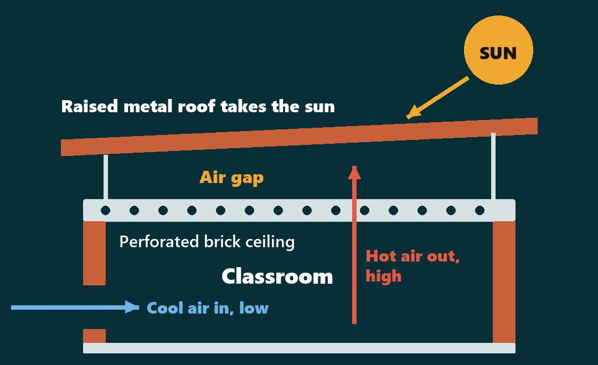
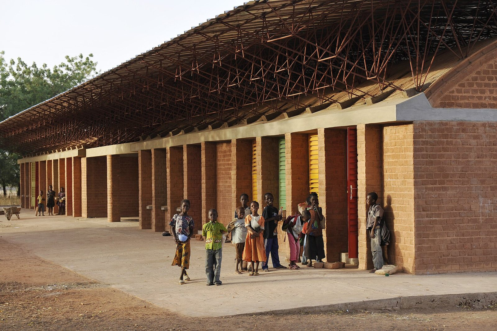

A school designed for heat — with zero air-conditioning
Gando Primary School · Francis Kéré · Burkina Faso, 2001
What is heat to a child in a classroom?
Human comfort: the body feels 6 things
Air temperature
How hot the air around us is.
Radiant heat
Heat given off by hot roofs, walls and sun.
Air speed
Moving air carries heat off the skin.
Humidity
Damp air slows sweat from drying.
Activity
A busy body makes more heat.
Clothing
What we wear holds heat in.
Nature: heat travels 3 ways
Radiation
The sun heats whatever its rays hit.
Convection
Warm air rises; cooler air flows in below.
Conduction
Heat soaks slowly through solid materials.
Design for these first — then decide if any machine is needed.
From 460 million children to one classroom roof
460 million children (76%) face 83+ days a year above 35°C.
Every school closed for 7 days, 25–31 May 2024. Exams still went ahead.
Where design decides whether children can learn in the heat.
Roof, ceiling, walls, air: the 4 moves that Gando got right.
Gando Primary School
Separate the roof from the room

The sun heats the roof, not the pupils. Hot air escapes up through the ceiling holes while cooler air comes in low.
How Gando beats the heat
Lift the roof
A wide overhang shades the walls and keeps rain off the bricks.
Add a brick ceiling
It takes the roof's heat so the room doesn't.
Use heavy walls
Clay-cement bricks slow the day's heat down.
Let air do the work
Cool air in low, hot air out high. No AC.

Local hands, local bricks, low cost
The community gave labour and materials from concept to completion.
Close for heat — or design for it?
PUNJAB, MAY 2024
- All schools shut for 7 days
- Exams still held in the heat
- Learning days lost
GANDO, SINCE 2001
- Classrooms stay in use
- Shaded double roof
- Passive cooling, no AC
How would you cool a classroom in Jacobabad?
Roof, ceiling, wall or window — tell us the one detail you'd change.
Answer in the comments of the post that brought you here, or share it with a colleague:
Rana Mohsin Ali · Archiverse-Pakistan · 10 November 2026
Sources: ASHRAE Standard 55 (thermal comfort); ISO 7730; UNICEF via Dawn, 8 Aug 2023; Down To Earth; Dawn, 20 May 2024; Arab News, 20 May 2024; Kéré Architecture; Aga Khan Award for Architecture; Pritzker Architecture Prize 2022
Photos: Helge Fahrnberger / www.helge.at, CC BY-SA 3.0, via Wikimedia Commons; GandoIT, CC BY-SA 3.0, via Wikimedia Commons